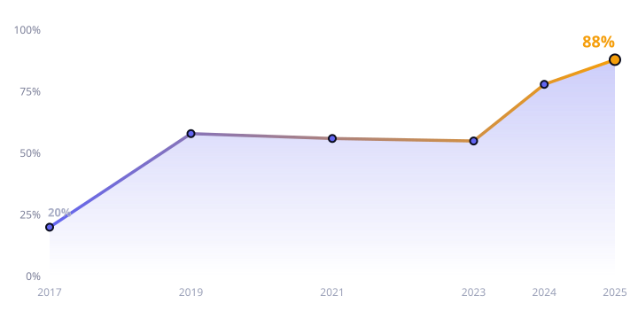

AI is not a trend. It is the new baseline.
Around the world, the businesses adopting AI are answering faster, serving better, and pulling ahead. The data is hard to argue with, and none of it requires an enterprise budget anymore.

Read past the headline and it is a story about customer patience.
The statistics describe large organizations, but the behaviour they measure belongs to your customers too.
Response time became the product
When most businesses answer instantly, a two-hour reply reads as closed. The bar your customers hold you to was set by companies you never competed with before.
The cost of entry collapsed
What required a data team five years ago now runs on tools a single business can afford. That is the whole reason a local cafe can have what an enterprise had.
Early beats perfect
Most adopters see a return inside the first year, because the wins are unglamorous: fewer missed calls, faster quotes, follow-ups that actually happen.
The same math, on a Main Street scale.
You do not need survey data to see this one. You can count it on your own phone.
Do the arithmetic on one missed call a day.
Take your average order or job value. Multiply it by one missed call per day. Multiply that by the days you are open. That number is what doing nothing costs you this year, and it is usually larger than the system that would have caught it.
The same math works for the message that arrives at 9pm, the quote nobody followed up on, and the hour a week spent retyping information between two apps.
None of it shows up on a profit and loss statement, which is exactly why it goes unfixed for years.
What the data does not say.
AI does not replace your judgement
It handles the repeatable part: answering the same question at midnight, remembering the follow-up, filing the details. What makes your business worth choosing still comes from you.
Tools alone do not produce a return
The organizations reporting gains changed how work flows, not just which software they bought. That is why every engagement starts by finding the leak instead of picking a tool.
See what these numbers would look like in your business.
A free consultation, no obligation. I will show you where the leaks are and what fixing them is realistically worth.